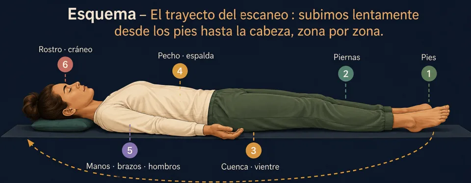
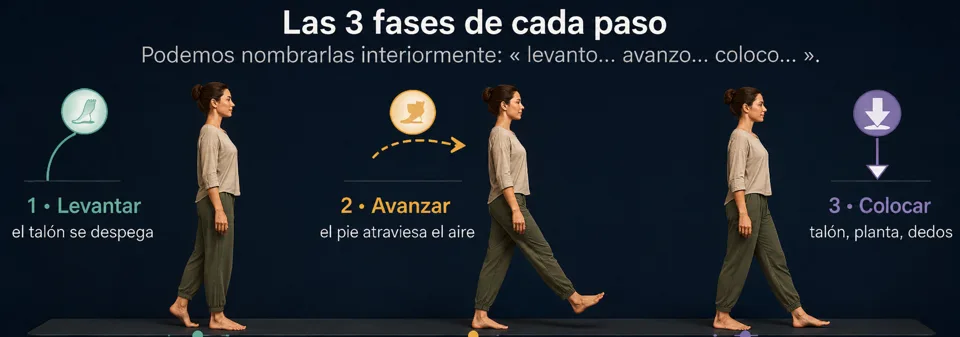
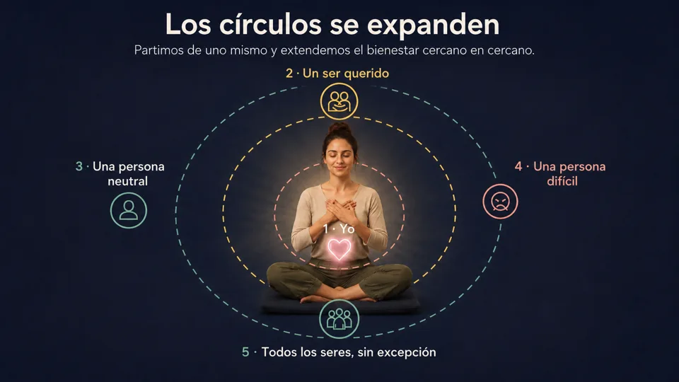
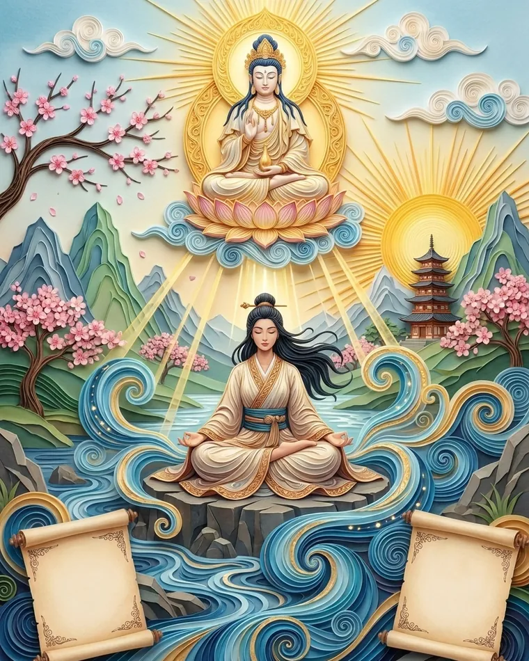
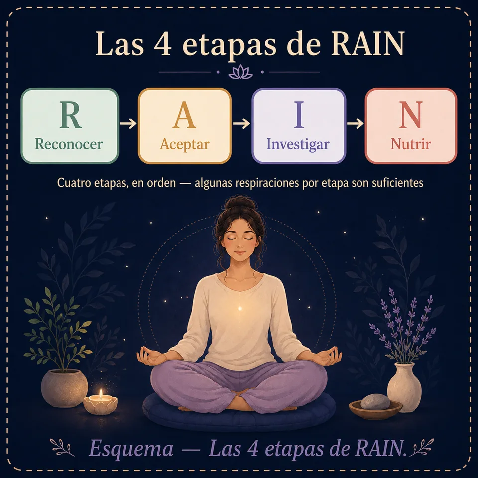

Tipos de meditación: las técnicas explicadas una a una
Los tipos de meditación, uno a uno: escaneo corporal, meditación caminando, bondad amorosa, RAIN, visualización… Cada técnica, con sus pasos y consejos.
Escaneo corporal, meditación caminando, bondad amorosa, visualización, método RAIN… La palabra «meditación» reúne técnicas muy distintas, cada una con su fuerza. Esta guía las explica una a una: cómo practicarlas, cuándo elegirlas y a quién le convienen.
Las técnicas del menú
Respiración consciente
La puerta de entrada a todas las meditaciones. Simplemente se posa la atención en las sensaciones de la respiración, sin modificarla. Es la técnica que hay que dominar primero: todas las demás se apoyan en ella.
Desarrollo paso a paso
- Instala tu postura (sección 2) y cierra los ojos o baja la mirada.
- Toma 3 respiraciones profundas para marcar la entrada en la sesión, luego deja que la respiración vuelva a ser natural.
- Elige tu punto de observación: el aire fresco en las fosas nasales, el pecho que se eleva o el vientre que se hincha. Mantén el mismo durante toda la sesión.
- Observa cada respiración desde el inicio de la inhalación hasta el final de la exhalación, como una ola completa.
- Cuando la mente se vaya (¡se irá!), anota «pensamiento», sonríe interiormente, vuelve a la respiración.
- Para terminar, amplía la atención a los sonidos, al cuerpo entero, y abre los ojos lentamente.
Escaneo corporal (body scan)
Un viaje de la atención a través del cuerpo, de los dedos de los pies a la coronilla. Excelente para soltar las tensiones acumuladas, reconectar con las sensaciones y preparar el sueño. Se practica tumbado o sentado.

Desarrollo paso a paso
- Túmbate (o siéntate), toma 5 respiraciones abdominales para asentarte.
- Lleva la atención a los dedos del pie izquierdo. ¿Qué sientes? Calor, contacto, cosquilleo… o nada en absoluto — «nada» también es una observación válida.
- Sube zona por zona: pie, tobillo, pantorrilla, rodilla, muslo… luego la otra pierna, la pelvis, el vientre, la espalda, las manos y los brazos, los hombros, el cuello, la cara, el cráneo.
- En cada zona, quédate de 3 a 5 respiraciones. Sobre una tensión, imagina que la exhalación la atraviesa y la suaviza.
- Termina sintiendo el cuerpo entero, unificado, durante unas respiraciones.
Atención plena (mindfulness)
Estar plenamente presente a lo que es, instante tras instante, sin juzgar. En sesión, se observan por turnos la respiración, los sonidos, las sensaciones y los pensamientos. Fuera de sesión, se aplica a los gestos cotidianos — comer, caminar, ducharse.
Desarrollo paso a paso (sesión formal)
- Estabilízate 2–3 minutos en la respiración consciente.
- Ábrete a los sonidos: acógelos tal como vienen, cercanos o lejanos, sin nombrarlos ni comentarlos.
- Ábrete a las sensaciones: contactos, temperaturas, tensiones — el cuerpo como un paisaje.
- Ábrete a los pensamientos y emociones: míralos aparecer y desaparecer, como burbujas.
- Descansa en la presencia abierta: sin objeto particular, simplemente estar ahí, consciente de todo lo que se presenta.
- Vuelve a la respiración 1 minuto antes de concluir.
La versión cotidiana: el ejercicio de la pasa 🍇
Toma un alimento sencillo (una pasa, una onza de chocolate). Obsérvalo 30 segundos como si fuera la primera vez: color, textura, olor. Ponlo en la boca sin morder. Explora. Muerde por fin, muy lentamente. Este ejercicio fundacional muestra hasta qué punto nuestros gestos son automáticos — y lo que significa «presencia».
Caminata meditativa
Meditar en movimiento. Perfecta para quienes «no consiguen quedarse sentados», para combatir la somnolencia o para hacer una pausa activa. Se practica en unos pocos metros, tanto en interior como en exterior.

Desarrollo paso a paso
- Elige un pasillo de 5 a 10 metros, tranquilo. De pie, inmóvil, siente primero tus apoyos durante 30 segundos.
- Camina muy despacio — mucho más despacio de lo habitual. Manos juntas delante o detrás del cuerpo, mirada posada a 2 m por delante.
- Descompón cada paso: levantar · avanzar · apoyar. Siente la transferencia del peso de un pie al otro.
- Al final del pasillo, detente, respira una vez, gírate con conciencia, vuelve a empezar.
- ¿Mente en otra parte? Detente un segundo, vuelve a las sensaciones de los pies, retoma.
Bondad amorosa (Metta)
Cultivar activamente la bondad, hacia uno mismo y luego hacia los demás, repitiendo interiormente deseos sinceros. Esta práctica suaviza la autocrítica, apacigua las relaciones difíciles y desarrolla calidez y empatía.

Desarrollo paso a paso
- Asiéntate 2 minutos en la respiración, con una mano sobre el corazón si te ayuda.
- Para ti mismo, repite lentamente: «Que esté a salvo. Que tenga buena salud. Que esté en paz. Que viva con facilidad.» Deja que cada frase resuene.
- Visualiza a un ser querido y dirígele los mismos deseos: «Que estés a salvo…»
- Luego una persona neutra (un comerciante, un vecino con el que te cruzas) — misma fórmula.
- Luego, si te sientes preparado, una persona difícil. Empieza modestamente: alguien ligeramente irritante, no tu peor conflicto.
- Amplía por fin a todos los seres: «Que todos los seres estén en paz.»
Visualización
Usar la imaginería mental como soporte de meditación. Se construye interiormente un lugar o una imagen recurso (playa, bosque, luz) y se habita con los cinco sentidos. Muy útil para calmarse, ganar confianza y prepararse mentalmente.
Desarrollo paso a paso — el «lugar seguro»
- Cierra los ojos, 5 respiraciones abdominales.
- Deja venir un lugar donde te sientas bien — real o imaginario: una playa, un claro, una habitación acogedora.
- Constrúyelo sentido por sentido: ¿qué ves (colores, luz)? ¿Qué oyes (olas, viento)? ¿Qué sientes en la piel (calor, brisa)? ¿Un olor? ¿Un sabor?
- Instálate en la escena. Encuentra tu sitio exacto, tu posición. Respira como si estuvieras allí.
- Ancla el lugar: dale un nombre o asócialo a un gesto (pulgar contra índice). Podrás «volver» en unos segundos en un día estresante.
- Abandona la escena con suavidad, vuelve a los sonidos reales, mueve los dedos, abre los ojos.
Meditación con mantra
Repetir un sonido, una palabra o una frase como punto de anclaje, en lugar de la respiración. El ritmo de la repetición ocupa la mente discursiva e induce una absorción tranquila. Ideal para las mentes muy parlanchinas, a las que el silencio de la respiración deja demasiado espacio para los pensamientos.
Elegir tu mantra
El significado importa menos que la sonoridad y la neutralidad: elige una palabra que no desencadene reflexión, y mantén la misma durante varias semanas.
Desarrollo paso a paso
- Postura, ojos cerrados, 3 respiraciones profundas.
- Empieza en voz baja: repite el mantra suavemente, 1 a 2 minutos, sintiendo su vibración.
- Pasa al susurro, luego a la repetición puramente mental, acompasada con la respiración (p. ej. «so» al inhalar, «ham» al exhalar).
- Deja que el mantra gire solo. Si se ralentiza, se desvanece o se deforma, es buena señal: no interfieras.
- ¿Mente ausente? Retoma simplemente la repetición, sin comentarios.
- Termina con 1 minuto de silencio, observando el eco del mantra.
Sueño y relajación profunda
La única meditación en la que quedarse dormido es un éxito. Se combinan respiración calmante, escaneo corporal descendente y visualización suave para llevar al sistema nervioso al modo reposo. Para practicar en la cama, con las luces apagadas.
Desarrollo paso a paso
- Prepara el terreno: pantallas apagadas 30 minutos antes, habitación fresca y oscura, tumbado boca arriba o en tu posición habitual para dormir.
- 4 ciclos de 4-7-8 (ver sección Respiración) para activar la relajación.
- Escaneo corporal descendente: esta vez del cráneo a los pies. En cada zona, murmura interiormente «se suelta»: la frente se suelta, la mandíbula se suelta, los hombros…
- Pesadez: imagina el cuerpo hundiéndose suavemente en el colchón, cada vez más pesado con cada exhalación.
- Imagen suave: deja flotar una escena tranquila (el lugar seguro de la visualización) sin intentar precisarla.
- Si el sueño no llega, no pasa nada: permanecer en esta relajación ya descansa profundamente. Soltar el «TENGO que dormir» es precisamente lo que permite dormir.
")

Observación (Vipassana)
Observar finamente todo lo que aparece — sensaciones, pensamientos, emociones — para percibir su naturaleza cambiante e impermanente. Donde la respiración consciente concentra, Vipassana explora. Requisito previo: sentirse cómodo con 15 minutos de respiración consciente.
Desarrollo paso a paso
- Estabiliza la atención 5–10 minutos en la respiración: es la base indispensable.
- Amplía a las sensaciones corporales: recorre el cuerpo y detente en lo que se manifiesta — calor, presión, pulsación, cosquilleo.
- Observa cada sensación con ecuanimidad: ni retenerla si es agradable, ni huir de ella si es desagradable. Mírala nacer, cambiar, desaparecer.
- Etiqueta lo que te atraviesa: «pensamiento», «tensión», «irritación», «ganas de moverme» — y vuelve a la observación.
- Nota la impermanencia: todo lo que observas aparece y luego pasa. Es la intuición central de la práctica.
- Cierra la sesión con 2 minutos de respiración y un momento de bondad hacia ti mismo.
Presencia abierta (Zazen / Shikantaza)
«Simplemente sentarse.» Ni objeto de concentración, ni técnica: una presencia total y sin objetivo en el instante. Es la más despojada de las prácticas — y paradójicamente una de las más exigentes, porque «no hay nada que hacer» y por tanto ningún sitio donde agarrarse.
Desarrollo paso a paso
- La postura ES la práctica: instálala con especial atención (sección 2). En zazen tradicional: ojos entornados, mirada posada a 1 m por delante, manos en óvalo sobre los muslos, pulgares que se tocan.
- Unas respiraciones profundas, luego deja la respiración libre.
- No tomes ningún objeto: no sigas la respiración, no cuentes nada, no apuntes a nada. Sé la habitación entera: sonidos, luz, cuerpo, respiración, pensamientos — todo a la vez, nada en particular.
- Cuando un pensamiento te arrastre, vuelve a la sensación de estar sentado — el peso, la verticalidad, el contacto.
- Permanece inmóvil hasta la señal de fin. La inmovilidad del cuerpo enseña la estabilidad de la mente.
Meditación de gratitud
Orientar deliberadamente la atención hacia lo que va bien. El cerebro tiene un sesgo de negatividad: retiene diez veces mejor lo que amenaza que lo que nutre. La gratitud es un contraentrenamiento sencillo, cuyo efecto sobre el ánimo y el sueño es uno de los mejor documentados en psicología positiva.
Desarrollo paso a paso
- Asiéntate 1–2 minutos en la respiración, con una mano sobre el corazón si te gusta ese gesto.
- Deja venir 3 cosas de tu día por las que puedas dar las gracias. Pequeñas preferiblemente: un rayo de sol, un mensaje recibido, un café caliente. Lo concreto vence a lo grandioso.
- Para cada una, revive la escena durante unas respiraciones: ¿dónde estabas, qué sentiste? Deja que la sensación agradable se instale en el cuerpo (calor, relajación, sonrisa).
- Incluye a una persona: visualiza a alguien que haya contribuido, aunque sea indirectamente, a tu día, y dirígele un gracias interior.
- Termina contigo mismo: una cosa que TÚ hayas hecho hoy y que reconoces. Suele ser la etapa olvidada — y la más transformadora.
Acoger una emoción difícil (RAIN)
Un protocolo en 4 etapas para atravesar una emoción fuerte — ira, ansiedad, tristeza, vergüenza — en lugar de huir de ella o ahogarse en ella. RAIN es el acrónimo inglés de Recognize, Allow, Investigate, Nurture. Es la técnica que hay que desenfundar cuando «se desborda».

Desarrollo paso a paso
- R — Reconocer: nombra lo que está ahí, simplemente: «hay ira», «hay ansiedad». Decir «hay ira» en lugar de «estoy enfadado» ya crea un espacio.
- A — Aceptar: autoriza a la emoción a estar presente, durante esta práctica. No aprobarla — solo dejar de luchar contra el hecho de que esté ahí. Puedes murmurar «sí» o «está ahí».
- I — Investigar: con curiosidad, explórala en el cuerpo: ¿dónde se aloja? ¿Garganta apretada, pecho caliente, vientre en un nudo? ¿Qué tamaño, qué temperatura? ¿Se queda fija o se mueve? Permanece del lado de las sensaciones, no del de la historia («él dijo que…»).
- N — Nutrir: ofrécete lo que esta parte de ti necesita: una mano sobre el corazón, una frase amable («es difícil, y estoy aquí»), la imagen de un ser querido bondadoso. Trátate como tratarías a un amigo en el mismo estado.
- Después de la lluvia: quédate unas respiraciones en la calma relativa que sigue, sin reabrir el expediente mentalmente.
Micromeditaciones SOS (1 a 3 minutos)
Prácticas relámpago para los momentos calientes: antes de hablar en público, después de un correo irritante, en una cola, en medio de un día que descarrila. Ninguna postura requerida — de pie, sentado, caminando, con los ojos abiertos.
🛑 El método STOP (1 minuto)
- S — Stop, detente: interrumpe lo que estás haciendo, un segundo.
- T — Take a breath, toma aire: una respiración profunda, vientre que se hincha, exhalación larga.
- O — Observa: ¿qué está pasando aquí, ahora? Cuerpo, emociones, pensamientos — un escaneo relámpago de 3 respiraciones.
- P — Prosigue: retoma tu actividad, eligiendo conscientemente lo que sigue.
🖐 El anclaje 5-4-3-2-1 (2 minutos) — antiansiedad
Cuando la mente se dispara, vuelve a los sentidos: nombra 5 cosas que ves, 4 que oyes, 3 que tocas, 2 que hueles, 1 que saboreas. Es imposible rumiar e inventariar los sentidos al mismo tiempo.
🌬 El suspiro fisiológico (30 segundos)
Dos inhalaciones por la nariz encadenadas (una grande + una pequeña para «completar»), luego una larga exhalación por la boca. Repite 3 veces. Es el medio más rápido conocido para hacer bajar una subida de estrés.
Meditación sonora (escucha profunda)
Hacer de los sonidos tu anclaje. En lugar de luchar contra el ruido (vecinos, calle, oficina abierta), se convierte en el soporte mismo de la meditación. Muy accesible: los sonidos captan la atención de forma natural, solo hay que escuchar. Ideal también para quienes la respiración aburre o angustia.
Desarrollo paso a paso
- Postura, ojos cerrados, 3 respiraciones para llegar.
- Abre bien los oídos: acoge todos los sonidos, sin buscar ninguno. Cercanos, lejanos, continuos, breves.
- Escucha como se mira un paisaje: los sonidos aparecen, viven, desaparecen. No etiquetes («coche», «nevera») — quédate con la materia sonora: grave/agudo, cerca/lejos, áspero/liso.
- Nota los silencios entre los sonidos — el espacio en el que todo eso aparece.
- Cuando un pensamiento te arrastre (a menudo desencadenado por un sonido: «¿¡quién vuelve a pitar!?»), anota «pensamiento» y vuelve a la escucha desnuda.
- Termina incluyendo el sonido más cercano de todos: tu propia respiración.
¿Qué técnica elegir? Tabla de correspondencia
| Tu necesidad | Técnica recomendada | Nivel |
|---|---|---|
| Descubrir la meditación | Respiración consciente | Principiante |
| Estrés, tensiones físicas | Escaneo corporal · Coherencia cardíaca | Principiante |
| Dormir mejor | Sueño y relajación · 4-7-8 | Principiante |
| Imposible quedarse sentado | Caminata meditativa | Principiante |
| Mente muy parlanchina | Mantra · Respiración cuadrada | Intermedio |
| Autocrítica, relaciones difíciles | Bondad amorosa (Metta) | Intermedio |
| Preparación mental, confianza | Visualización | Intermedio |
| Profundizar en el autoconocimiento | Vipassana | Avanzado |
| Simplicidad radical, soltar | Zazen | Avanzado |
| Ánimo bajo, rumiaciones negativas | Gratitud | Principiante |
| Emoción fuerte que atravesar (ira, ansiedad…) | RAIN · Suspiro fisiológico | Intermedio |
| «Cero tiempo» en el día | Micromeditaciones SOS (STOP, 5-4-3-2-1) | Principiante |
| Entorno ruidoso · respiración incómoda | Meditación sonora | Principiante |
Practica con la app
¿Prefieres practicar antes que leer?
Todo lo que describe este artículo se practica en MeditaDream, una app de meditación gratis: 129 meditaciones guiadas y 17 mundos inmersivos en español, sin suscripción, sin anuncios, sin cuenta y sin conexión.
✦ Descubre la app gratis